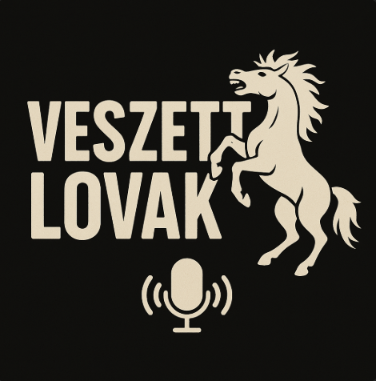

Veszett Lovak Podcast
Ahol a nyughatatlan elmék találkoznak.
Hallgass bele
Információk
Minden Szombaton 15:00-18:00 között élő adásban
Minden Vasárnap 18:00-20:30 között élő adásban
Minden Szerdán új epizódok